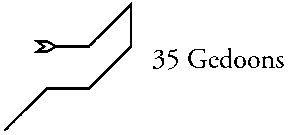

Tapamal, Part 34 of 91, 1st of LOE. Zodiacal King: Zurchol Ministers: 2658 Mundane association: Onigap (deduced by Turner to be Yucatan and Central Mexico, on the basis of Kelly's descriptions.)
Tuesday, November 28, 1995 4:57 PM
Considering the Part last night, I sensed that I would have difficulty getting into it; probably because its nature is at odds with those Parts from ICH. This one is dark and wild by comparison. This invocation is a warm-up, to get me used to the energies and focused into their ways.
Invoked according to the usual procedure.
There is some confusion; I get images that relate to widely separated parts of the world. One of these is Kali as the Dark Mother, wearing a necklace of skulls, dancing on the bodies of the dead.
Then the image changes and I see a man; he might be an Indian from Central America, or he might be Polynesian of the breed who settled Rapa Nui and set up the god-statues in their own image. The man is wearing a necklace of long feathers, brightly colored like the plumage of parrots or birds of paradise. Beads of turquoise and gold separate the feathers and keep them rayed across his chest. He has some sort of hat on, or it might be a crown, made of stiff leather; it forms an upright ring around his head. It has squarish, stylized glyphs or pictures embossed upon it. He wears a skirt of red, heavy cloth, mid-thigh length.
He holds a war-club in his left hand, and an obsidian knife with a gold handle in his right. He stands in the middle of a field of corpses, and his legs are stained with blood up to the knees, as are his arms to the elbows. If this is Yucatan, the man must be either Maya or Toltec; I don't know enough to tell the difference.
This man is a panther, or his name is "Panther", or his power is that of a panther -- like a totem animal; perhaps all three of these. He killed all those around him, and none dared to resist him. There is a terrible freedom in his eyes, and an even more terrible sense of separation from other men; he sees no limits on his actions, none at all. His spirit laps up the life-force of the dying and becomes exalted from it. He sees himself as a great cat stalking the land, taking whoever he meets for his prey, forcing the lesser beings to build a den suited to his stature and then to answer to his will. In his own mind, he is a power beyond all other powers; even the gods are within his control.
I don't want to see any more at the moment.
I know without it being spoken that this Part relates to the path of Capricorn, which connects Binah with Tiphereth in Achad's Tree. This is the "Devil" aspect of the path, in its worst form, in which the individualized self tries to take on the unlimited, undifferentiated quality of Binah while retaining its "selfness".
Friday, December 01, 1995 4:35 PM
Invoked Tapamal according to the usual procedure.
A great deal of resistance to entering this Part. I do not know what it is, but there is an intimation of great danger; somewhere, something is gibbering in fear, and this is leaking over into me.
A quick flash shows the sigil of the Part overlaid on Central America. It roughly follows the west coast of Yucatan, with the final line cutting across to the Pacific at the ithsmus west of there in Mexico. Guatemala is also contained within the power of the Part.
I am in complete darkness now; an oppressive darkness, as if shielded from even the dim light of the night-sky by some canopy above. The air is extremely humid, and carries smells and tastes of decay. Still the fear is present, somehow preventing me from entering any further -- or rather, from seeing what is surely all around me. The fear narrows perceptions. I tell myself that it is not my own fear that I am feeling, and immediately there is a sense of opening up, as the space around me expands into a whole world.
A pair of yellow cats-eyes open and peer at me from ten or twelve feet away. It is a jaguar, as black as its surroundings. Only the eyes and a faint sheen on its fur distinguish it.
Now I am in the jaguar, looking out from its eyes. The surroundings are not dark from this viewpoint; I am in a jungle, looking at a very small hole in it created by a fallen tree, too small to even be called a clearing. A capybara or some similar large rodent huddles underneath the tree, tense and ready to flee at any moment.
I can feel the jaguar's mouth watering. It gets ready to charge and pounce on the rodent. But the rodent senses something and quickly jumps away into the undergrowth. The jaguar paces forward and sniffs at the spot where it had been. It looks both ways along the tree-trunk, then turns to the right and moves silently towards the exposed rootball of the tree.
Coming around the roots, it looks at their underside. It sees several small rodents hidden among the roots. It bats at the roots with one paw, and manages to hook one of them out on its claws. It grabs it with its mouth, crunches it once, and swallows. The other rodents squeak and cower deeper in the roots. The jaguar takes and eats another, and then walks away, looking for bigger game.
The voice says: "To the small and weak, death is a great hunter; one who cannot be overcome nor propitiated. One may only hope that it takes another and leaves one alone for another day.
"It is the fear of the hunted that you felt on entering this Part, o man who is a mage; its terror mirrors the terror of men when they confront the 'Abyss' [I could hear the quotes] unprepared. Binah is the huntress and the darkness that conceals it; her absence of qualities is sheer terror to those whose self demands that existence be qualified. What choice does such a one have, in the face of Her, save to freeze or to flee?
"One can step forward into the jaws of death, but for many that is no choice; the seeming extinction of self is an unacceptable solution. One may flee, but once the hunter has the scent, there is no true escape; the emptiness pursues, and one lives one's time in fear of negation. One may freeze, ceasing movement and change, but that too is a death; the nature of life is change, and if one fights change, then one is soon exhausted, and dies despite one's efforts.
I get images here of a stepped pyramid with a small temple at the summit. Priests stand before an altar in front of the temple, and a human sacrifice is tied on the altar, his chest forced upwards so that the breastbone is exposed to the knife. And the sense is that this is identical with the "Devil" card of the Tarot, with its man and woman chained to the altar.
"The priests fear the negation of Binah, which they perceive as a great hungry emptiness, not as the glorious fullness that it is. And they sacrifice others to propitiate that emptiness, never thinking of sacrificing themselves. And in doing so, they become that very emptiness that they fear so greatly; it seeps into them and permeates them, eating away at them until they are only shells. Neither the soul nor the greater life is left to them; they are hollow and dead; there is no immortal part left in them.
"And in the end, the sacrifice becomes their own survival, for a time. They no longer seek to placate a hungry god, but to suck up the life of those killed to counteract the emptiness that eats away at them. But even this does not avail them; pieces of themselves continue to slough away like the body of a leper, until nothing cohesive is left, and they are gone forever.
"Now there is no point in continuing; you understand all too well, and rightly do not wish to. Come again to the next Part in order, and continue on. We are done."
I ended the vision.
Seer's comments:
My being is not suited to dealing with this Part. I had my experiences of ultimate Fear very early in my magickal career. Since then it has not played a very great role in my development; Pain (a different Martial aspect) replaced it for most purposes. One should not place too much confidence in either my perception of the Part or my comments thereon.
Capricorn and its Tarot card have many possible interpretations, most of them of a positive nature. The sign is the sign of initiation, of the effort and discipline necessary to achieve a goal, and the high place that one comes to through that effort. But the sign's ruler, Saturn, is not only the planet of structure and discipline, but also of endings and terminations. Mars, exalted therein, is not only the Work and Will of the magician, but also the planet of violence and fear. The negative, degenerate qualities of the sign and planets predominate in this Part.
The man seen in Tuesday's vision is an historical personage. One of the early Mayan kings, the one who created most of their empire, was named "Jaguar" or "Red Jaguar", something of the sort. If I remember correctly, the custom of the times was that nobility captured in battle were sacrificed by the winning king to the gods of his kingdom, and apparently went to their deaths willingly. Death-oriented religions and cultures -- as the Mayans, Aztecs and some Kali-cults -- are one part of the path's nature.
The perceptual state of this king is another example of the grandiose form of schizophrenia mentioned in connection with an earlier Part. Here it is depicted as the result of a downflow of Binah-force, in its form-destroying aspect, combined with the self-exaltation typical of the Solar consciousness.
Friday's vision depicts these two forces in a more common form, in which the superior Binah-force does not combine with the Solar, but instead overshadows it. The result is the fear, terror, and sense of imminent destruction of the traditional "Abyss" experience as described by Crowley.
The Binah-force enters the person along a dimension that he cannot perceive and in which he is incapable of acting. He is effectively helpless before it, and has no real escape. Hence its depiction as the invisible Huntress. Several possible reactions to this situation are shown.
The best, but least desirable from a Self-interested viewpoint, is to actively submit oneself to the death-experience. "Freezing" and "fleeing" are the two instinctual variations of the flight-or-fight syndrome; neither is successful in doing more than delaying the inevitable. If one has gone far enough on the path that one has contacted the Binah energies, it is already too late to avoid their effect; the conscious self is the last part of the being to perceive the contact, so it is already well-established. "Freezing", that is, resisting the changes it makes, is also futile; the finite cannot overcome the infinite, only make the effects more painful.
The remaining response is one that leads to the creation of a Black Brother. The being seeks to separate itself from the transfinite by objectifying it, creating a finite image between himself and it. Crowley called this image Choronzon, the "demon of the Abyss"; for others it might be Satan, Chthulhu, Set, Huitzilopochtli, or some other such image. The being then attempts to propitiate this demon -- and delay his own demise -- by feeding other people as substitutes.
Note that if we were going up the Tree
instead of from the top down, this Part, with its emphasis on
Fear, would come before the Parts from ICH, all of which relate
to the ultimate finite synthesis called "love". Even
though it is still a finite Ideal, one cannot experience it in
its purest form so long as one retains the conception of oneself
as a completely distinct, separate entity. This experience of
the death of self seems a necessary precursor.

Gedoons, Part 35 of 91. 2nd of LOE. Zodiacal King: Cadaamp. Ministers: 7772 Mundane association: India Major (Southeast Asia and India east of the Ganges.)
Monday, December 04, 1995 9:30 PM
For a while I could see nothing except vibrating lines of many colors filling my visual field; these were like the visual effects that sometimes come when peaking on LSD. They were accompanied by a sense of fragmentation also similar to that of an acid peak.
Then I was looking down on southeast Asia from the direction of India. The sigil was overlaid thereon. The sigil started at about the location of Haiphong in Vietnam, curled around the southern end of the region and northwards, ending just east of the easternmost mouth of the Ganges. The Malaysian peninsula was not included.
Now comes the image of a man, down on his knees and with his head bent close to the ground. He is wearing a coolie outfit or one of those pajama-like suits the Viet Cong used to wear. But he does not seem to have Asiatic features; I cannot place him in any ethnic group.
It is hard to tell what he is doing. He seems to be sorting out tiny grains of something from the dirt; he is picking up individual grains of rice and eating them. Bugs also, and anything else that comes in front of his eyes. He does not look up at all.
The image widens. I can see a truck parked a short way away. It is piled high with sacks of rice; one of these has a leak -- this is the source of the grains the man seeks. It seems he could just stand up, walk over to the truck, and take much more rice than he is finding on his knees. Why doesn't he do so? Is he even aware that the truck is there?
He sits up straight for a moment, and knee-walks a few feet down the road -- away from the truck. Then he bends over again and goes back to his picking.
The voice speaks:
"One can become so accustomed to one's routines of survival that one does not see riches even when they are nearby, and free for the taking. One can become so accustomed to hunger that a full stomach is not even imaginable, nor can the means by which it can be gained. That which is reliable, though it yields scant gain, is taken over the chances [it may have said "changes" instead] that would bring more.
"So too in the spiritual quest, one can get so used to one's routines of "development" that one continues them even when they no longer produce good results. When the culture is steeped in routines and ritual to begin with, then the purpose of practices may be forgotten entirely, and the practices be assumed to be the end in themselves. "
I get side-images of monks in a monastery, going through their daily rituals of work, worship, and meditation. Everything is timed exactly; just so much time for work, so much in the temple, so much in one's cell. Then doing it all over again. Other images of the prayer-wheels that Tibetans like so much, equally stylized, equally useless when the purpose is forgotten.
"The intent of ritual activity -- we do not mean the ceremonials of magick -- are to free the mind from concern with the daily round of living. To free the mind from the need to make decisions, to make efforts, that would distract from the pursuit of the goal of enlightenment. But what use, if the rituals are themselves so time-consuming that no time is left for the mind to be free to roam?
"Inspiration, the descent of the spirit, does not come when the mind is occupied, but when it is without occupation; open, relaxed, attentive but not seeking."
The voice stops abruptly. The sense of the speaker's presence is no longer there. Nor does any further image appear. The power of the Part can still be sensed, however.
I wait for a while, simply focused and ready, not seeking more. Then for a few moments, the shimmering lines and the disorientation of the opening return. Then they pass again. The voice continues, now seeming to come from a distance:
"One can free the mind without such ritualistic activity; it is a matter of careful judgment, of examination of the details of life, and the elimination of all those that are not essential. Then do the rest as the moment demands, and take no thought for it beyond the moment of its accomplishment. Nor be seeking forward in thought to the next task -- it shall come in its own time, and be done when its time comes, not before. Such is the way of the Taoist sages.
"Let time become naught; let the days cycle by as they will, and care not whether it be spring or fall, summer or winter. Care not for the passage of the years; make them invisible to your sight and thought. Do what is before you when it is before you, and leave it when it is done. Out of this comes a natural ordering of life, superior to any ritual ordering.
"And when the concerns of life are so reduced to their essentials, then Time opens up in which the spirit can come in, and the being is prepared for it to be received. The myriad tiny moments that separated tasks before now join together into larger moments, even days, when nothing need be done except attend to the spirit. Tasks adjust themselves naturally, when they have room to do so.
"Now come you to the next of the Parts; this one is done as well as needs be. Comment, and go on. We are done."
I thank the voice, and end the vision.
Seer's comments:
Gedoons is the first of the Parts to be governed by Cadaamp, the Zodiacal King of Virgo in the system used for this work. The vision seems to be a general treatment of the sign. The characteristics of Virgo are attention to detail, and a love of routinized activity. This detail-consciousness often comes at the expense of the wider view; routinization at the expense of opportunities. The opening image of the man gleaning rice-grains expresses this.
In Frater Achad's "reformed" Tree of Life, the path of Virgo connects Hod, the sphere of the intellect, with Geburah, the sphere of directed activity. It is also one of the three vertical paths connecting the lowest triad of the Tree with the middle triad. As such, it represents one of the means used to move from the mundane-oriented region of the Tree into the spiritually- and magickally-oriented region.
The intellect, the part of the mind that deals with words and converts experience into word-groups, is extremely sensitive to events. Everything we see, everything that happens in our life, produces an immediate spate of activity in the intellect, which often continues long after the event itself is passed. We create descriptions of the event, play with inner dialogs of how we should have reacted to it for best effect, decide on contingency plans for future occurrences of similar events, and so on. Anticipated events (and purely imaginary events) produce equally furious activity, even though the events almost never occur in the way we anticipate.
The intent of the monkish lifestyle is to reduce this activity of the intellect by taking away the opportunity and need for it. "Silencing the inner dialog", as Casteneda puts it, is the first step towards becoming aware of the spiritual world. When the person eschews possessions, there is no need for concern with acquiring or keeping them. When the person abandons status and recognition, family and society, social affairs become much simpler. When basic survival is assured through a minimum of communal work, or through begging, then many mundane fears fall by the wayside. The intellect loses most of its usual sources of stimulation. Those remaining minimum activities are then converted into a routine, so that even they do not stimulate the inner dialog very much.
But it is easy for certain personality types to make such routine into ritual, and make the ritual an end in itself, focusing on it instead of becoming unconscious of it. Without a constant re-direction of the attention away from the routine and towards the inner world, it becomes empty activity.
The "Taoist" view extolled
by the voice of the Part is a higher form of this principle, in
which even routine is abandoned. The activities of life and mind
become a direct reflection of the innate cycles of activity of
the spiritual self. The consciousness dwells in the present, and
as those energies of which it is an expression vary over time,
so does the focus of its attention. Everything is done as the
present moment dictates, with neither anticipation of possible
futures, nor mulling over of past events. Achieving this does
not constitute "enlightenment", though one might get
that impression from certain famous texts. Rather, it is the perfection
of the relationship between action and thought on the one hand,
and the individual will, the "atmic impulse" on other.
Ambriol, Part 36 of 91. 3rd of LOE. Zodiacal King: Ziracah. Ministers: 3391 Mundane association: Orcheny (Islands in the marshes of the lower Tigris and Euphrates.) Note: James shows a different, discontinuous sigil for this Part.
Thursday, December 07, 1995 1:44 PM
While practicing the visualization of the sigil prior to the invocation, I heard an astral voice cry: "The Elixer! The wonderful Elixer!" in tones of awe. I was momentarily filled with a feeling of wonder, then it faded again.
Invoked Ambriol according to the usual procedure.
The center of the circle opened, and below me I could see Australia. The sigil of the Part was overlaid on it. The start of the sigil was around Darwin. It followed the coast east to the opening of the big gulf, then jogged southwest into the desert. The parallelogramatic section of the sigil enclosed most of the Northern Territories and northern Queensland, roughly contiguous with the watershed that drains into the gulf.
Now an image of The Star is overlaid on the land and sky. My viewpoint revolves around so that I am looking at the region from above the gulf. The water-carrier has one foot on the gulf, the other on the land south of it; she pours out water from her left-hand jug upon the mountains and hills to the south, and it drains down through the watershed to the gulf. She pours water from her other jug over the sea, and it forms a typhoon, which stirs up the waters of the gulf and flings them upwards.
Above her head a bright star appears. It is not Polaris (as in previous visions) but Achernar, shining with blue-white intensity. And it seems there is another water-carrier among the stars above, and she pours down her water upon this star, from whence it flows and meanders northwards until it reaches the celestial equator near the Hunter's feet. There it enters a lake surrounding the Hunter's foot; Rigel spins redly and its heat vaporizes the water, which disappears into the background of the sky.
Now the image of the earthly water-carrier and her surroundings begins to waver, as if seen through disturbed water; soon only the waves of the disturbance are visible. Simultaneously, the river in the sky becomes more regular in shape, a series of up-and-down strokes. The waves above and the waves below combine and form into the glyph of Aquarius.
The voice speaks: "As above, so below. They are one; there is no separation between them, save in the falsely discriminating minds of men. Why should the sky not affect the Earth? And wherefore should not the Earth equally affect the sky? They have run together since the beginnings of Time, and all within their horizon is but a single realm, unbroken, an un-hatched egg."
(I get an impression here that the waves of the Aquarius sigil somehow represent the "solve et coagula" formula in action. Each downward point of a wave is a condensation of substance; each upward point is a dissolution of substance into a vaporous state. Just so, the water condenses and falls on the land; it flows to the sea and is again evaporated. Just so, the clouds of gas in space condense into stars; these concentrate until their heat is too great; then they explode their substance into vapor again.
(And each of the Earthly water-carrier's jugs is one end of a process that contains several repetitions of the formula; an additional polarity overlaid on the basic process. So also the celestial river, running from Achernar to Rigel, is a process containing multiple repetitions of the formula. What this overlaid process might be, I do not yet know.)
The voice speaks again, answering my thought: "What else could it be, o man, but the distillation of the wonderful Elixer, the essence of all things? And it is all one process, above and below. So the waters of the world carry with them the essences of the lands they pass through; these are carried upwards in the evaporation to become one with the Aires. Some condenses again with the rain, but other parts are carried higher. And in the highest Aires are they boiled off of this world by the power of the Sun, to become part of the great seas of space.
"So too in the worlds of men; they reincarnate ever, each time become more themselves, more their own essence. At any point in time, some return again to the Earth; others achieve a high enough place that they are released from the bindings of this world into the greater universe. And what happens then, is not for us to say; but the process continues ever onwards."
"Now think of what we have said before: the release of a man from this world is the true beginning of his life, a life of freedom from all save self-defined limits. There is nowhere barred to those who leave, nowhere they might not pass. Those who travel the star-ways take from this world their own distillation of its essence, and carry it with them wherever they might pass. Thus is the Earth rejoined with that realm from which she blocked her attention in a long-ago time. With each such passing a tendril of her substance is carried along; these bind to what they pass, and the links are re-made that once were broken.
"And in these links will the higher process, that which takes place among the stars, eventually be brought down to Earth again. The false division will be healed, the separation in the minds of men destroyed forever. The illusion that Here is not There [i.e., that the Earth is not part of the Heavens] shall be overcome, and men once more pass freely from realm to realm, even those who have not yet earned their passage into the greater life.
"Now go, and come again another day, and you will see more, more clearly. We are done."
I ended the vision.
Seer's comments:
Achernar is the first star of the constellation Eridanus, the River. It's name comes from an Arabic phrase meaning "end of the River". Whether it was supposed to be the headwaters or the mouth is debatable; here it is the former. Rigel in Orion lies very close to the other end of Eridanus. It is actually a blue-white supergiant, not a red star as described here. But the visible star is part of a four-star system composed of two binaries; the complex orbits of these four might be likened to a cosmic equivalent of the typhoon produced by the Earthly water-carrier.
The Achernar end of the River is close to the Phoenix. The other end is at Orion. Orion lost his sight and then regained it thanks to the rays of the Sun; the Phoenix dies and is reborn. It seems to me that both might be an expression of the principle being shown here.
Others of the voices have said that the "star-roads" are endless, the travels upon them never reach a final goal. Therefore this distillation process must also be endless; the Elixer is never completed, but always in process.
Sunday, December 10, 1995 12:50 PM
Invoked Ambriol according to the usual procedure.
The night sky appears above the circle, and then it seems that I am standing in the flood-plain of that region described in the previous vision, hills to the south and east, desert to the west, the great gulf to the north. And in the sky, the sigil of the Part becomes one with Eridanus, though they are nothing alike in shape; somehow there is an identity between them.
And now I am in that sky-river, gliding down it in a marvelous boat. The boat seems to be made of jewels or stars itself, bound together with some kind of magick force. It seems the essence of Night, that boat, and it passes through places and times where no others could pass. It adapts, changing its shape and nature as it moves, conforming to the qualities of the spaces around it.
In the bow of the boat stands the eldest Set, in his form from before his demonification. He is also like Night, and carries a myriad of stars within him. He bears a long thin staff in his right hand, and in his left is a sphere that is like an eye, and somehow also like a grail. He also seems to change his nature as the boat moves along; his aura is never the same from one moment to the next. Yet on some other level there is continuity; adaptation and change are his nature.
There is something very confusing here; at one moment it seems that the spaces change as we pass through them, and at another that this god is changing the spaces. Or perhaps he is creating them?
The voice speaks:
"There is a subtle dance of powers going on here, o mage; as there is for all those who travel the star-roads. It is not like the Earth, where the changes man takes upon him in incarnation are forced, to a great extent, by the existing state of the world. Rather, here in the spaces of freedom the world changes as the being who moves in it changes. Each new potential manifested by a being instantly becomes one with the existing state of the universe, becomes embodied in it with those qualities already established. And the manifestation of those qualities in space reflects back upon the traveler, causing additional changes and adaptations in his nature.
"Thus there is a continual unfolding of both universe and the being who travels; each takes on marvelous new qualities, creates things previously unknown. And thus each road is a river; not a fixed thing of earth, but a fluid, adaptable, ever-changing flow. There are no guides here; how can there be when each step and motion creates newness? There is no hierarchy here, no rulership of one power by a greater power; how can there be, when the attempt to rule changes the conditions as much as any other action? Only voluntary cooperation among beings -- that is, Love under Will -- allows them to be fellow-travelers for a time, joining their creative powers in a dance of endless surprises.
"Take you the bow position in this boat of years, for a time, and see what happens."
I move to the front of the boat, and in that motion become the god who stands there. I look forward. After a time the boat passes into a distinct space, a sphere within which certain qualities seem to maintain themselves over time.
In that space, passing by on the left of the boat, I see my Temple of the Tablets. And below the boat, in the relative terms of this space, I see a network of cubes, the faces of each one connected to their nearest neighbors by lines of light. These cubes are each a set of Tablets, like unto those of the Enochian magick, but not identical. This network extends down and away in every direction, seemingly endless.
Then I see another Temple forward and on the left; this one is of Fire. (The first was of Air.) And looking far away to starboard, I see two more, in the other two elements. Together they form a great square above the sea of cubes; and as I move towards the midpoint between them all, another, greater Temple forms within those bounds. It towers over the others and seems to include them.
I reach the midpoint, and pass through the central beam of power in that greater temple. It fills me and seems to expand me for a moment. The boat seems caught in an eddy, whirling around within the beam three or four times before passing out of it again, and going on.
The boat quickly passes out of that space and moves on. After a time, another thing comes closer out of the surrounding space; this one is the Comselha pattern I devised for the powers of the Tablets. It is like Oz in the old movie, high, pointed towers, but in the middle of a circular plate. As I move closer the space around me splits into three interrelated parts. In one, the basic circular pattern is to be seen, my original design. In another, "above" the first in some way, it is the city that grew out of that design. And in the third, above and larger than either of those, it seems an entire nation of powers has formed upon that circular plan, each square of the original design become a huge territory.
The boat passes out of this as well, and back into the undifferentiated spaces again.
And the voice says: "Though the change is inevitable within the star-roads, yet one can see landmarks there, creations that have gained a permanence of sorts in comparison with their surroundings. These serve as reference points and points of rendezvous for those who travel the roads. The ones that you see are of course your own, which have gained such permanence; there are many others, a few of which you have seen in your visions.
"One can travel from landmark to landmark, having confidence of arrival. Yet the paths between are always different, always changing. And even these landmarks change slowly, as those who arrive lend some of their own power and experience to the permanent spaces.
"But there is joy in striking out into the unknown, as well you know. One still encounters such landmarks, but one never knows when or where they will appear. And the blessing of surprise is added to the joy of going and arriving."
While this was said, we passed by other things. One like an upside-down ankh, the hole of which appeared as a tunnel passing through spaces ordered in endless vertically-oriented layers or planes. Another was a bow whose string vibrated in complex wave-forms. Another was a cube whose inside was larger than its outside. And others, too far away to see clearly.
The boat gave a sudden rocking motion, and it was back in the stream of Eridanus, moving through the sky towards Orion. All those other landmarks had vanished.
Looking down, it appeared that the "water" of this stream was compose of souls, all being rushed along by some unseen force. They did not appear disturbed or helpless; rather there was a sense of partying, of travel for its own sake; they appeared content with their circumstances. The overall flow of souls was fairly constant, but one could distinguish groups within the flow, marked by some common quality. The flow carried them onwards, faster than the boat was moving.
"Those who make the roads by their travels are not the only ones who can travel them. Given the right circumstances, any being may do so, but only in a passive way. These others must follow the streams and currents previously laid down; what they see along their way is not of their creation, but the developing and elaborating result of a true Traveler's work. And in doing so they too have a freedom of sorts; they are not free of their own natures, but they are free of any given world. Our Earth is a temporary exception, soon to be relieved of that restriction.
"These too are part of the wonderful Elixer being distilled from the worlds; never forget that. Their nature contributes as much to its quality at any time as do those whose work is on higher levels, and is by their own will."
"Now we have said enough. Comment as you will, and go on to the next of the Parts. We believe you will find it intriguing. We are done."
I ended the vision.
Seer's comments:
This vision returns to some very old themes of my work. And from my own viewpoint, doesn't really reveal much that is new about them. Much is promised, very little is delivered.
As described here, the "star-roads" seem not much different from the traditional view of the "astral plane", which changes according to one's will, and according to the unconscious impulses one projects upon it. Other visions have in fact depicted them as a sort of super-astral, a plane which is the Yesod of a Tree in which our entire Tree of Life constitutes Malkuth. This meta-Yesod is supposedly the residence of those beings who incarnate as planets, and many others of equal scope. A vast society of such beings has been hinted at. Beyond that, there is nothing more to say at this time.
The night-boat of Set seems to be a
complement to the boat of Ra.
Gecaond, Part 37 of 91, 1st of ZIM. Zodiacal king: Lavavoth (Sag.). Ministers: 8111 Mundane association: Achaia (southern Greece)
Saturday, December 16, 1995 8:31 PM
As I practiced visualizing the sigil, I got an image of it overlaid on Greece. It began at the Bay of Amvrakikos on the west side of the mainland, went south between the Ionian Isles and the mainland, east through the Gulf of Corinth, further east around Athens, then north and back west through the Gulf of Evvoia (sp?). The Peleponesos was not included.
Parnassus and Delphi were situated almost exactly in the center of the sigil. It seemed to me that a thin line of light was sticking upwards out of the mountain, and another was sticking down into the Delphic temple. And these two lines were somehow acting like the cables of an elevator -- they remind me of the space elevator in Clarke's novel, though the lines are nothing more than short segments.
There was also an impression that there was a hole in the Earth at the location of Delphi, with a short conical upper section, leading to a narrow, cylindrical main section below. There seemed no bottom to the hole.
I could get nothing more in this vision.
Seer's comments:
The energy of this project seems to be running out, as it did last year at about this time. Perhaps this is a good place to stop for now. If the past two years are any indication, the energy will come back some time after the summer solstice.
Laparin, Part 38 of 91, 2nd of ZIM.
Zodiacal king: Olpaged. Ministers: 3360. Mundane association:
Armenia (modern Armenia and Azerbaijan)
Docepax, Part 39 of 91, 3rd of ZIM.
Zodiacal king: Alpudus. Ministers: 4312 Mundane association: Cilicia
Nemrod ("up in the mountains beyond Cathay").